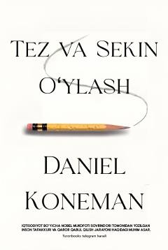

TVInson miyasining qaror qabul qilishdagi ikki xil tizimi haqidagi mashhur asar.
Ushbu kitob inson miyasining qaror qabul qilish jarayonidagi ikki xil tizimi — tez va sekin o'ylash mexanizmlarini ilmiy jihatdan tushuntirib beradi. Muallifimiz kundalik hayotdagi xatolar va xulosalarimiz qanday shakllanishini qiziqarli misollar yordamida ochib beradi. Asar o'quvchilarga o'z fikrlash tarzini tahlil qilish va to'g'ri qarorlar qabul qilishda yordam beradi.